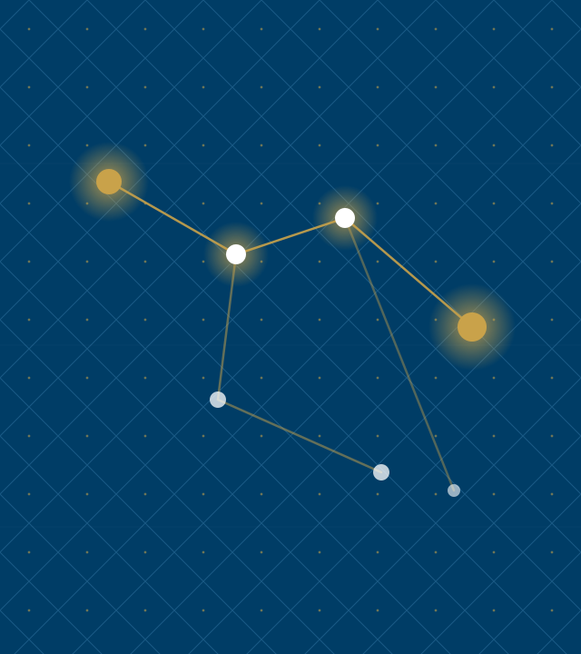
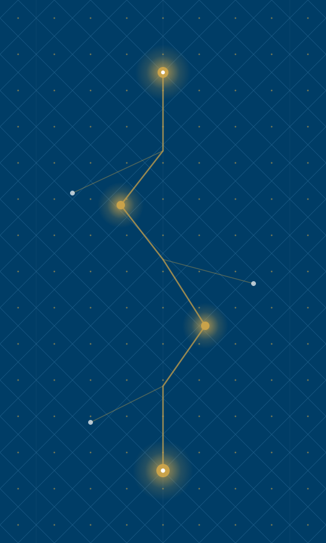

A decision framework for product leaders navigating market uncertainty
Lattice · Layout Gallery
Section 01 · Foundations
The landscape has shifted. Here is what that means for us.
Lattice · Layout Gallery
Module 02
Before we score signals, we need to agree on what a signal is.
The word is overloaded. We use it to mean anything from a customer complaint to a macro trend. This framework requires a tighter definition.
Lattice · Layout Gallery
Context · Competitive Dynamics
The window for differentiation is narrowing.
Three converging forces — commoditized infrastructure, compressed release cycles, and rising customer switching costs — have reduced the average durable advantage window from 36 months to under 14. Teams that cannot identify signal from noise in that window will consistently miss timing.
Lattice · Layout Gallery
Architecture · Signal Pipeline
How signals move from input to decision.
Four-stage processing pipeline — weekly cadence
Lattice · Layout Gallery
Impact · Pilot Results
Six months of results across four product teams.
Measured against pre-framework baseline, same teams, same market conditions.
73%faster close
4.2×signal recall
18decisions logged
91%team alignment
Lattice · Layout Gallery
The framework has four components.
Signal Intake
Weekly structured collection across customer conversations, market data, and competitive moves. Normalized into a common schema before scoring.
Scoring Model
Each signal scored on three dimensions: confidence, recency, and strategic relevance. Weights are team-configurable and reviewed quarterly.
Decision Log
Every decision recorded with the signals that informed it, the options considered, and the criteria applied. Feeds the calibration loop.
Calibration Loop
Monthly retrospective that compares predicted outcomes to actual outcomes and adjusts scoring weights accordingly.
Lattice · Layout Gallery
Code in card headers and body text.
Signal Intake v2.4
Handles 94% of structured signals without manual intervention. Average latency: 4 min from ingestion to scored entry.
Scoring Model configurable
Three dimensions: confidence, recency, relevance. Default weights are 33 / 33 / 33 — adjust after your first retrospective.
Decision Log required
Every prioritization change above P2 must carry a logged rationale. No log, no change.
Calibration Loop monthly
Compares predicted outcomes to actuals. First meaningful weight update happens after 2 cycles.
Lattice · Layout Gallery
Signal Intake produces three outputs.
Weekly Signal Brief
A ranked list of the top 10 signals from the prior week, with confidence scores and source attribution. Distributed to product leads every Monday morning.
Anomaly Alerts
Real-time flags when a signal exceeds the 2σ threshold on any dimension. Routed directly to the accountable PM with a 4-hour response SLA.
Monthly Signal Index
The source of truth for the calibration loop. A complete record of all signals logged, scored, and resolved in the prior month. Required reading before each retrospective.
Lattice · Layout Gallery
Two failure modes the framework is designed to prevent.
False signal amplification. A single loud voice — one enterprise customer, one analyst report, one competitive announcement — dominates the decision without being weighed against the full signal set. The scoring model prevents any single source from exceeding 30% of the total signal weight in a given decision.
Signal hoarding. Teams collect signals but do not log decisions, so the calibration loop has nothing to learn from. The Decision Log is a required artifact for any prioritization change above P2 severity. No log, no change.
Lattice · Layout Gallery
Two intake modes for different signal types.
Structured Intake
Signals with clear schema: NPS verbatims, support ticket categories, feature request volumes, win/loss notes. Ingested automatically via API connectors. Scored on arrival. Zero manual handling.
Unstructured Intake
Signals without schema: field observations, conference conversations, analyst briefings, competitive demos. Require human classification before scoring. Routed to the signal owner for a 48-hour classification window.
Lattice · Layout Gallery
Scoring model: before and after the calibration loop.
Before Calibration
Equal weights across all three dimensions. Confidence, recency, and relevance each contribute 33% to the final score. Simple, consistent, but blind to what your market actually rewards.
❯
After Calibration
Weights reflect your team's historical signal accuracy. If recency has consistently been the weakest predictor for your product, it gets downweighted. The model becomes a record of what you have learned.
The shift from equal weights to calibrated weights takes two retrospective cycles — roughly 60 days from adoption.
Lattice · Layout Gallery
The signal was always there. We just didn't have a system that forced us to look at it before we'd already decided.
— Head of Product, Pilot Team 3
Lattice · Layout Gallery
How a decision moves through the framework.
Signal Logged
Owner classifies and submits to intake queue
Scored
Model applies current weights, generates score
Brief Published
Signal appears in weekly brief with rank
Decision Logged
PM records rationale, signals, predicted outcome
Retrospective
Outcome scored, weights updated accordingly
Lattice · Layout Gallery
What the framework does not do.
It does not make decisions — it structures the information that humans use to decide.
It does not replace customer discovery — it scores and routes what discovery surfaces.
It does not work without the Decision Log — calibration requires outcome data to learn from.
It does not guarantee alignment — it surfaces disagreement earlier, which still requires resolution.
It does not scale down to individual feature decisions — it is designed for prioritization above P2.
Lattice · Layout Gallery
Four things that must be true before you begin.
You have a regular prioritization cadence — at minimum monthly.
At least one person owns signal collection full-time or as a primary responsibility.
Leadership has agreed to log decisions with rationale, not just outcomes.
You have 90 minutes per week to run the intake and scoring process.
Lattice · Layout Gallery
Calibration Result · 6-Month Pilot
14x
Return on signal investment — measured as decisions that reached the right outcome on the first attempt, versus the baseline rate before the framework was adopted.
Lattice · Layout Gallery
S
Section 02
Scoring Model Deep Dive
What this section covers
The scoring model is the most configurable component. This section covers the three dimensions, how weights are set initially, and how calibration updates them over time.
Confidence
How many independent sources corroborate the signal. Ranges 1–5.
Recency
Time-decay applied from signal date to scoring date. Half-life is team-configurable.
Strategic Relevance
Manual score from the signal owner. Ranges 1–5. Requires justification above 4.
Lattice · Layout Gallery
What Would Help Us Move Forward
Next step is a working session, not a debate.
Walk these questions with me in 60–90 minutes. The output is either a design we can execute, or a shared list of what needs more work before we commit.
Lattice · Layout Gallery
Finding 01 · Structured Intake
Structured intake performed above expectations — volume and latency were not concerns.
What worked
API connectors handled 94% of structured signals without manual intervention. Average scoring latency was 4 minutes from ingestion. Schema normalization held across all five connected sources.
What required tuning
NPS verbatim classification had an 18% error rate in the first two weeks. Required a training pass on the classification model before accuracy reached the 92% target.
Viable as designed — NLP classification requires a 2-week warm-up period on new deployments.
Lattice · Layout Gallery
Key insight works on any card-bearing layout.
Signal Intake
Weekly structured collection across customer conversations, market data, and competitive moves.
Scoring Model
Each signal scored on three dimensions: confidence, recency, and strategic relevance.
Decision Log
Every decision recorded with the signals that informed it and the criteria applied.
Calibration Loop
Monthly retrospective that compares predicted outcomes to actual outcomes.
The calibration loop is what separates teams that learn from teams that repeat the same mistakes.
¹ Trailing blockquote becomes a key insight. Trailing paragraph becomes a below-note.
Lattice · Layout Gallery
Three scoring failure modes found in the pilot.
Recency dominance
High-recency noise crowding out durable signal. Teams set recency weight above 50% in the first calibration pass. Corrected by capping recency weight at 40% until two calibration cycles complete.
Source concentration
Single-customer signals inflating confidence scores. One enterprise customer's verbatims represented 34% of all structured intake in month one. Corrected by adding a source-diversity floor to the scoring model.
Outcome misclassification
PMs logging predicted outcomes that were too vague to score at retrospective. "Improve retention" is not scoreable. "Reduce 30-day churn from 8.2% to below 7%" is.
Lattice · Layout Gallery
Four requirements every decision system must meet.
Speed
Decisions must close within the window they are relevant to. Systems that add latency consume the value they exist to protect.
Auditability
Every prioritization decision above a threshold must carry a traceable rationale. Required for alignment and compliance.
Adoption
If the team won't use it weekly, calibration never runs and the model never improves. Ninety minutes per PM is the ceiling.
Calibration
The system must improve over time. A static scoring model is a spreadsheet with extra steps.
Lattice · Layout Gallery
We evaluated four intake tools against the criteria.
Tool A · Chorus
SpeedAuditabilityAdoptionCalibration
Strong call recording and summarization. No decision logging or calibration loop. Requires separate tooling for everything downstream of intake.
Tool B · Productboard
SpeedAuditabilityAdoptionCalibration
Solid intake and prioritization. Decision logging exists but is manual and rarely used. No calibration mechanism. Setup takes 3–4 weeks.
Tool C · Notion
SpeedAuditabilityAdoptionCalibration
Flexible enough to build the full system. But building it takes 40+ hours and the result is fragile. Teams abandon maintenance after the first quarter.
Tool D · Sprig + Decision Log
SpeedAuditabilityAdoptionCalibration
Meets all four criteria within the 90-minute weekly budget. Reaches production in the same week it is adopted. Recommended.
Lattice · Layout Gallery
The four tools side by side.
Criterion
Chorus
Productboard
Notion
Sprig + Log
Speed
✓
✗
✓
✓
Auditability
✗
✓
✓
✓
Adoption
✓
✓
✗
✓
Calibration
✗
✗
✗
✓
Setup time
1 day
3–4 weeks
40+ hours
Same day
Evaluated against the same four teams and the same 90-minute weekly budget constraint.
Lattice · Layout Gallery
Applying the criteria to the tools — here is where the evidence points.
The evidence favors Tool D
Sprig combined with a lightweight Decision Log meets all four criteria within the 90-minute weekly budget, reaches production in the same week it is adopted, and leaves a clean exit ramp if a better native solution emerges.
The path is not self-executing
Sprig requires a connector built to your NPS and support platforms. Budget 4–6 hours of engineering time in week one. After that, zero maintenance overhead.
The Decision Log is the hardest part
Not technically. Culturally. PMs need to log decisions with predicted outcomes before they close, not after. This is a habit change, not a tool change.
Lattice · Layout Gallery
Two options with a connector and an explanatory note below.
Option A · Label
Body text describing the first option. Enough detail to fill the card naturally and show how the layout handles a few lines of prose.
❯
Option B · Label
Body text describing the second option. The connector arrow between them implies direction or causality — before/after, input/output, cause/effect.
The below-note sits under the cards after a hairline rule. Use it for a single contextual sentence.
Lattice · Layout Gallery
How to roll this out across your organization.
Pick one team and one decision type
Start with a team that already has a regular prioritization rhythm. Apply the framework only to a single decision category for the first 30 days.
Log everything, decide nothing differently
In the first month, do not change how you make decisions. Just log signals and decisions as you would have made them anyway.
Run your first retrospective
At day 30, score the logged decisions against outcomes. This is where the model gets its first calibration pass.
Expand to a second team
With one retrospective complete, you have evidence. Use it to onboard the second team with real data, not promises.
Lattice · Layout Gallery
The six signal dimensions, what they measure, and how they are scored.
ConfidenceNumber of independent sources corroborating the signal1–5 · Auto-scored
RecencyTime-decay from signal date, configurable half-life0.0–1.0 · Auto-scored
RelevanceAlignment to current strategic bets, owner-scored1–5 · Manual
ReachNumber of customers or segments affected1–5 · Auto-scored
EffortEngineering and design cost to act on the signal1–5 · Manual
Confidence deltaChange in confidence score since last scoring cycle−5 to +5 · Auto
Lattice · Layout Gallery
Header And Footer
Header stays uppercase — footer renders as written.
Set header: and footer: in frontmatter for deck-level labels, or use per-slide comment directives. The header uses uppercase text-transform automatically, so you write it in any case. The footer renders exactly as written.
Lattice · Layout Gallery
Implementation · Token Pipeline
The tokenization call is three lines of application code.
JavaScript · SDK v2 interface
import { TokenVault } from"@company/token-sdk";
const vault = new TokenVault({ keyFile: "./vault.key" });
// Tokenize at ingestionconst token = await vault.tokenize(ssn, { field: "ssn", tenant: "acme" });
// Detokenize only at point of use — every call is loggedconst plaintext = await vault.detokenize(token, { requestor: "claims-svc" });
Lattice · Layout Gallery
Before & After · Key Distribution
File-distributed keys versus vault-integrated keys.
Before · File-distributed
# Key material on disk — anyone with# filesystem access can read itwithopen('./vault.key', 'rb') as f:
key = f.read()
cipher = AES(key)
token = cipher.encrypt(ssn)
After · HSM / KMS integrated
# Key never leaves the HSM —# every operation is auditedimport boto3
kms = boto3.client('kms')
token = kms.encrypt(
KeyId='alias/tokenization',
Plaintext=ssn
)['CiphertextBlob']
Lattice · Layout Gallery

Layout · Image
Image right is the default — text leads, evidence follows.
A landscape asset in a half-canvas slot. The image preserves its native aspect ratio; the lattice pattern frames whatever bands remain. No cropping, ever — authors see the image they dropped in.
Lattice · Layout Gallery

Layout · Image Left
Lead with the image, follow with the argument.
A portrait asset in a half-canvas slot — the image fits proportionally, and the lattice pattern shows through on either side. Same rule, different aspect.
Lattice · Layout Gallery
Signal Pipeline · Reference Visualization
Weekly Signal Brief — the primary output of the intake pipeline, distributed every Monday
Lattice · Layout Gallery
Dark Variant · Any Layout Class
The dark modifier works on any layout.
Add dark alongside any class — palette remaps automatically
Lattice · Layout Gallery
Dark Variant · Content
The token system handles dark without per-element overrides.
All colours reference CSS variables — --bg, --text-heading, --text-body, --border — that remap when dark is added. Cards, headings, body text, and borders all shift automatically. The spectrum bar is suppressed on dark slides.
Lattice · Layout Gallery
[ Signal Pipeline · Portrait Asset — Dark ]
A tall asset on a wide canvas — the lattice pattern frames the image on the left and right, replacing dead space with brand chrome.
Lattice · Layout Gallery
Dark Variant · List
The card stack renders cleanly on dark backgrounds.
Every card uses --bg-alt for fill and --border for the border — both remap in dark mode.
The accent left border uses --accent which is unchanged — the gold reads well against dark.
Body text shifts to --text-body which in dark mode is a warm light tone, not pure white.
Lattice · Layout Gallery
Dark Variant · Cards Stacked
Two-card layouts work equally well inverted to dark.
The architecture introduces a single key distribution question: what protects the file containing key material, and what is the blast radius if it leaves the host? Every other question in this document depends on the answer.
The pattern here is the same as any page of written argument — claim, then support. The dark palette does not change the information density or the reading rhythm.
Lattice · Layout Gallery
Modifier · list-steps phase
The phase modifier renames the prefix word from STEP to PHASE.
Architecture
The first phase scopes the technical surface — what we build, what we buy, what we defer. Output is an architecture decision record signed by the platform owner.
Pilot
One internal team, one workload, one quarter. The phase ends when the integration is in production and the on-call rota covers it.
Rollout
Five teams in two months. The phase ends when no team needs handholding and incident volume is at or below pre-rollout baseline.
Lattice · Layout Gallery
Modifier · list-steps milestone lettered
Modifiers compose: milestone renames the word, lettered swaps the format.
Codebook signing in production
The HSM-anchored signing pipeline runs end-to-end. The first signed codebook installs cleanly on a real client.
Multi-tenant DEKs
One codebook can carry distinct DEKs per tenant without per-tenant rebuilds. Crypto-shred is a single HSM op.
Per-purpose codebooks
Authoring a codebook scoped to a single business purpose takes minutes, not days. Audit trails distinguish purposes by default.
Lattice · Layout Gallery
Modifier · list-steps vertical
Vertical stacks the steps as rows; the connector becomes a down-arrow.
Sense
Inputs are signals. Signals are observed, never invented. The first step is to write down what you see, not what you conclude.
Score
A signal becomes data once it carries a number. The score is calibrated against outcomes, not against intuition.
Decide
A decision is a signal plus a deadline. Without the deadline it is an opinion, not a decision. The retrospective closes the loop on the score that earned it.
Lattice · Layout Gallery
Modifier · compare-prose chosen
Chosen flags the right-hand card as the winner.
Vault round-trip
Every detokenize is a network call to a central vault. Latency is a function of distance, not code. p99 60 ms, vault outages cascade.
❯
In-process codebook
Detokenize is a local function call against an SDK-resident codebook. p99 8 ms, vault outages do not affect tokenized-record reads.
The right card carries an accent left-edge and accent-tinted background — the same visual contract used by featured cards.
Lattice · Layout Gallery
Modifier · compare-prose decision
Decision composes chosen + rejected with a labelled connector.
Buy a vendor
Three vendors evaluated; none cover the regulatory boundary in-process. Time-to-integrate is six months at best; ongoing per-tenant licensing.
❯
Build in-house
Owns the architecture, owns the operating model, owns the timeline. The compliance window closes in 18 months and a vendor cutover would consume nine of those.
The left card is struck through to read as the option considered then dropped; the right card carries the chosen visual; the connector is amplified and labelled DECISION.
Lattice · Layout Gallery
Modifier · compare-prose vertical
Vertical stacks the two cards; the arrow connector rotates 90°.
Before — manual rotation
Operators schedule a rotation window, freeze writes on the affected scope, swap codebooks, run a verification pass, lift the freeze. Average outage 18 minutes.
❯
After — version-floor rotation
The signing pipeline emits a new codebook with an incremented version. Clients install the new codebook on next refresh. No write freeze. No coordinated cutover.
Lattice · Layout Gallery
Modifier · compact
Compact tightens the spacing scale ~25 %, end-to-end.
What changes
--sp-xs through --sp-2xl shrink. Card gaps, list gutters, and section padding follow because every layout reads them via var().
What does not change
Type ramp, palette, and chrome reservation (header / footer / pagination) are untouched. Compact is a density flag, not a different layout.
When to reach for it
You have one more card than fits, or your prose runs the section by 1-2 lines, or you want a denser visual rhythm without rewriting copy.
Composition
compact composes with dark, accent, and any layout where density makes sense. It is silently incompatible with title, divider, and image-full.
Lattice · Layout Gallery
Modifier · loose
Loose is the inverse — more breathing room, same layout machinery.
The spacing scale grows ~25 % rather than shrinks. Sections that already look generous become luxurious; sections that look cramped become balanced. Reach for loose when the slide carries a single editorial point and you want the page to feel deliberately quiet — values pages, declarative principles, the closing line of an argument.
The discipline is the same as compact from the other side: do not change the type ramp, do not change the chrome, do not change the layout. Only the variables that govern between-element rhythm move.
Density is not the same as importance. loose says: this page deserves room — not because it carries more, but because it carries one thing well.
Lattice · Layout Gallery
Modifier · accent
Accent replaces the rainbow stripe with a single editorial colour.
The default top border is a spectrum gradient — a system signal that the page is part of a wider deck. The accent modifier swaps that stripe for one solid colour and tints the slide heading. Use it when one slide carries the editorial weight of a section and you want the visual chrome to say so.
It composes with dark: on the dark canvas the spectrum top-stripe is suppressed entirely, so accent.dark restores a solid accent stripe in its place — preserving the visual signal across both canvases.